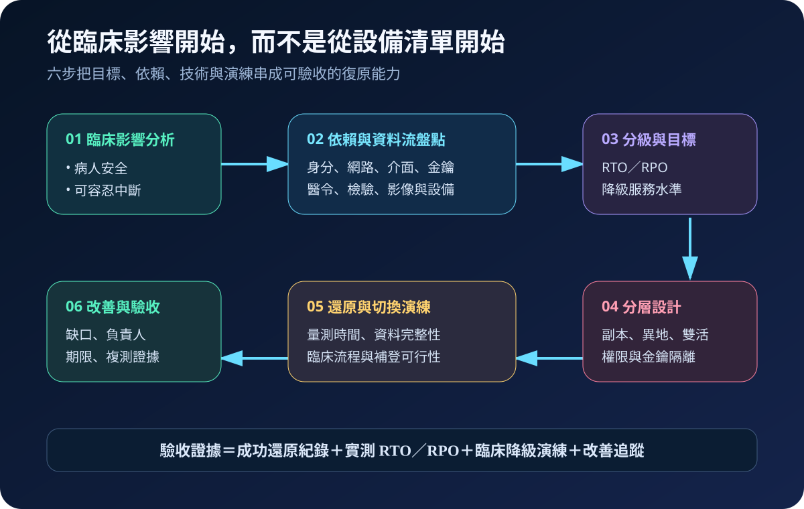
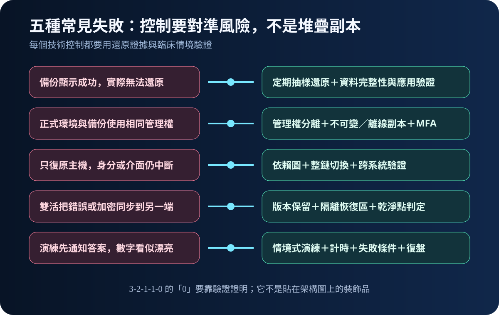

健康台灣深耕計畫-資安治理 · 2026-08-14
醫療備援如何真正復原：從 RTO、RPO 到還原演練
作者：Dr. William｜醫療資訊與資安治理實務工作者
這項能力解決的不是「有沒有備份」，而是核心系統中斷後，醫院能否在可接受的資料損失與時間內安全恢復照護。只有能被還原、切換並由臨床端驗證的備份，才能構成可用的復原能力。
名詞解釋：先分清楚資料與時間
RPO（Recovery Point Objective，復原點目標）是可接受回溯多少資料；RTO（Recovery Time Objective，復原時間目標）是服務要在多久內恢復。異地備援是把能力放到不同災害域；雙活讓兩端同時服務，但不會自動阻止錯誤同步。3-2-1-1-0可作為備份設計原則：三份資料、兩種媒體、一份異地、一份離線或不可變，並以驗證達到零錯誤。臨床降級運作則是在完整系統恢復前，以安全的替代流程維持必要照護。
規劃：從臨床容忍度反推架構
規劃應先依病人安全與服務影響分級核心系統，再盤點身分驗證、網路、介面、金鑰、醫療設備及外部供應商等依賴。角色不能只寫「資訊室」：系統負責人、臨床單位、資安、基礎設施、供應商與事件指揮都要有明確責任。驗收條件至少包括實測 RTO／RPO、還原完整性、切換成功率、降級流程可用性與缺口改善期限；數值應由個別醫院的業務衝擊分析決定，不宜照抄範本。

實作：分階段建立可證明的能力
- 第一階段：選一套高影響核心系統，建立資料流與依賴圖，確認備份帳號、金鑰及正式環境的管理權分離。
- 第二階段：建立異地、離線或不可變副本，準備隔離的乾淨恢復區，文件化切換、回切與人工降級程序。
- 第三階段：進行抽樣還原、整鏈切換及跨部門情境演練；從宣布中斷開始計時，核對病歷、醫令、檢驗、影像與資料補登。
- 第四階段：留下時間戳、成功條件、失敗證據與負責人，修正後再複測。「成功通知」只能作為監控資訊，「實際恢復服務」才應列為正式驗收。
風險：副本很多，仍可能一起失效
常見失敗包括備份可讀但應用無法啟動、備份與正式環境共用管理權、只復原主機卻漏掉身分或介面依賴，以及雙活把誤刪或勒索加密同步到另一端。演練若預先給答案，也會產生漂亮但無用的數字。不可變副本、權限分離、依賴盤點與隔離還原區必須一起建置，且每次演練都要有失敗條件與復盤。

可執行清單
- 核心系統是否有經臨床確認的 RTO、RPO 與降級服務水準？
- 備份管理權、金鑰與正式環境是否分離？
- 是否保存異地及離線或不可變副本，並驗證可還原？
- 演練是否涵蓋身分、網路、介面、設備、供應商與資料補登？
- 每個缺口是否有負責人、期限與複測證據？
結語
備援治理的成熟度不應以容量或副本數衡量，而應看醫院能否在壓力下安全恢復臨床服務。先做一套核心系統的完整演練，比一次買齊卻從未驗證更有價值。
內容說明
本文依健康台灣深耕計畫相關治理內容整理，並提供治理與執行框架；不取代主管機關正式公告、法律意見或個別醫院風險評估。